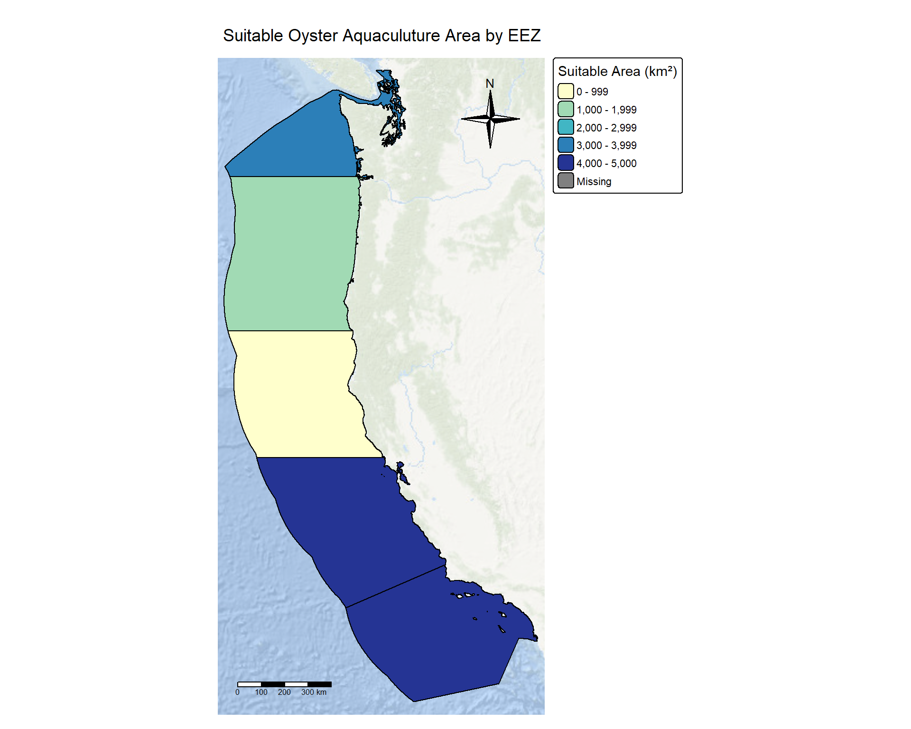
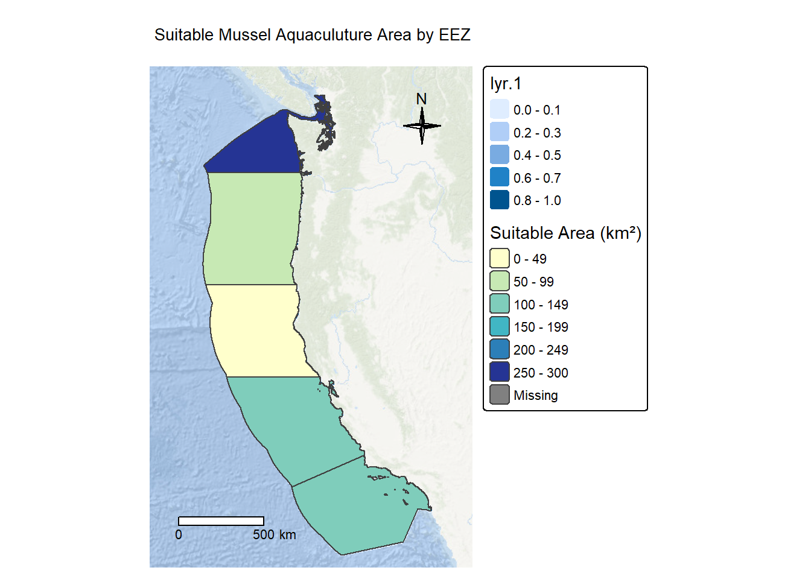

Code
# Load in Libraries
library(here)
library(testthat)
library(tidyverse)
library(sf)
library(kableExtra)
library(sp)
library(stars)
library(tmap)
library(terra)
library(viridisLite)November 12, 2025
Marine aquaculture is rapidly expanding as coastal nations seek sustainable ways to meet seafood demand. Identifying where aquaculture should occur is a major challenge—optimal sites must balance ecological suitability, production needs, and regulatory boundaries.
This analysis asks:
Which West Coast Exclusive Economic Zones (EEZs) in the United States are most suitable for developing aquaculture for oysters and the California datemussel?
This question matters because poorly sited aquaculture can increase disease risk, reduce water quality, and damage benthic habitats Hall et al., 2011. Meanwhile, global assessments suggest the U.S. has extensive unrealized aquaculture potential Gentry et al., 2017. By integrating environmental data with jurisdictional boundaries, spatial modeling can help coastal managers pinpoint responsible locations for future development.
I combined three geospatial datasets:
Environmental requirements were taken from fisheries and species-specific literature, including SeaLifeBase (2025).
All geospatial processing was performed in R using terra, stars, and sf.
I stacked five annual SST rasters (2008–2012), calculated the mean, and converted Kelvin to Celsius:
# Prepare Data
# Bathymetry
depth <- read_stars(here::here
("blog_post/EDS223_Blog/data_aqua/depth.tif"))
# Exclusive Economic Zones (eez)
eez <- st_read(here::here("blog_post/EDS223_Blog/data_aqua/wc_regions_clean.shp"))
# Sea Surface Temperature (SST) load as a list of .tiff files
sst_files <- list.files(path= here::here("blog_post/EDS223_Blog/data_aqua"),
pattern= "average_annual", # file name matching pattern
full.names = TRUE) # Reference entire file name matching this pattern[1] "sst_files:"[1] "C:/Users/Donaji/Documents/MEDS/Career_Prof/GitFolder/IIDonaji.github.io/blog_post/EDS223_Blog/data_aqua/average_annual_sst_2008.tif"
[2] "C:/Users/Donaji/Documents/MEDS/Career_Prof/GitFolder/IIDonaji.github.io/blog_post/EDS223_Blog/data_aqua/average_annual_sst_2009.tif"
[3] "C:/Users/Donaji/Documents/MEDS/Career_Prof/GitFolder/IIDonaji.github.io/blog_post/EDS223_Blog/data_aqua/average_annual_sst_2010.tif"
[4] "C:/Users/Donaji/Documents/MEDS/Career_Prof/GitFolder/IIDonaji.github.io/blog_post/EDS223_Blog/data_aqua/average_annual_sst_2011.tif"
[5] "C:/Users/Donaji/Documents/MEDS/Career_Prof/GitFolder/IIDonaji.github.io/blog_post/EDS223_Blog/data_aqua/average_annual_sst_2012.tif"[1] "file.exists check:"[1] TRUE TRUE TRUE TRUE TRUE[1] "average_annual_sst_2008" "average_annual_sst_2009"
[3] "average_annual_sst_2010" "average_annual_sst_2011"
[5] "average_annual_sst_2012"Check that the datasets have the same coordinate reference system
[1] "Coordinate reference system match!"Warning: CRS mismatch between eez and sstFind the mean SST from 2008-2012 (e.g. create single raster of average SST)
crop depth raster to match the extent of the SST raster note:
#Check resolution match
if (all(dim(depth_resample) == dim(sst_mean_celsius)) &&
isTRUE(all.equal(res(depth_resample), res(sst_mean_celsius))) &&
crs(depth_resample) == crs(sst_mean_celsius) &&
ext(depth_resample) == ext(sst_mean_celsius)) {
cat("✓ All raster properties match!\n")
} else {
cat("✗ Some properties do not match\n")
}✗ Some properties do not match✓ Successfully stacked!To find suitable locations for marine aquaculture, we’ll need to find locations that are suitable in terms of both SST and depth. Oyster research has show that oysters need the following conditions for optimal growth: - Sea surface Reclassify SST and depth data into locations that are suitable for oysters hint: set suitable values to 1 and unsuitable values to 0 find locations that satisfy both SST and depth conditions
# Reclassify SST (11-30°C suitable for oysters)
sst_suitable <- app(sst_mean_celsius, fun = function(x){
ifelse(x >= 11 & x <= 30,1,0) # if temperate is between 11- 30 °C, return 1, else 0
})
# Reclassify Suitable depth range (0-70 meters for oysters)
depth_suitable <- app(depth_resample, fun = function(x){
ifelse(x >= -70 & x <= 0,1,0) # select depths from 0 to 70 meters below surface.
})
# Suitable locations for both conditions
# Use lapp() to multiply the two suitability raster
suitable_locations <- lapp(c(sst_suitable, depth_suitable),
fun = function(sst, depth) {
sst * depth
})We want to determine the total suitable area within each EEZ in order to rank zones by priority. To do so, we need to find the total area of suitable locations within each EEZ.
Select suitable cells within West Coast EEZ’s find area of grid cells find the total suitable area within each EEZ hint: it might be helpful to rasterize the EEZ data
# Rasterize the EEZ data (creates zone IDs)
eez_raster <- rasterize(eez, suitable_locations, field = "rgn")
# Mask suitable locations to EEZ boundaries
suitable_eez <- mask(suitable_locations, eez) # keep only raster cells that fall within the EEZ polygons
#Calculate cell area with cellSize()
cell_area_km2 <- cellSize(suitable_locations, unit = "km") # calculate actual area of each raster cell
# Calculate suitable area per cell
suitable_area <- suitable_eez * cell_area_km2
# Sum suitable are by EEZ zonal statistics
eez_suitable_area <- zonal(suitable_area, eez_raster, fun = "sum", na.rm = TRUE)
colnames(eez_suitable_area) <- c("eez_id", "suitable_area_km2")# join with eez data
eez$suitable_area_km2 <- eez_suitable_area$suitable_area_km2[match(eez$rgn, eez_suitable_area$eez_id)]
# Rank EEZ data
eez_ranked <- eez[order(-eez$suitable_area_km2), ]
summary_table <- data.frame(
Rank = 1:nrow(eez_ranked),
EEZ_Name = eez_ranked$rgn_key,
Suitable_Area_km2 = round(eez_ranked$suitable_area_km2, 2),
Percent_of_Total = round(100 * eez_ranked$suitable_area_km2 /
sum(eez_ranked$suitable_area_km2), 1)
)
eez_table <- kable(summary_table,
caption = "EEZ Rankings by Suitable Aquaculture Area",
col.names = c("Rank", "EEZ Region", "Suitable Area (km²)", "% of Total"),
align = c("c", "l", "r", "r")) %>%
kable_styling(bootstrap_options = c("striped", "hold_position"),
full_width = FALSE) %>%
row_spec(0, bold = TRUE, background = "#4CAF50", color = "white") %>%
row_spec(1, bold = TRUE, background = "#E8F5E9") # Highlight top rank
eez_table| Rank | EEZ Region | Suitable Area (km²) | % of Total |
|---|---|---|---|
| 1 | CA-C | 4940.04 | 34.1 |
| 2 | CA-S | 4221.39 | 29.1 |
| 3 | WA | 3313.16 | 22.8 |
| 4 | OR | 1578.97 | 10.9 |
| 5 | CA-N | 454.30 | 3.1 |
# Map with tmap basic
tm_basemap("Esri.OceanBasemap", alpha = 0.7) +
tm_shape(eez_ranked) +
tm_polygons("suitable_area_km2",
palette = "YlGnBu",
title = "Suitable Area (km²)",
border.col = "black",
border.lwd = 0.5) +
tm_layout(main.title = "Suitable Oyster Aquaculuture Area by EEZ",
main.title.size = 1.2,
legend.outsides = TRUE,
frame = FALSE) +
tm_compass(type = "4star", position = c("right", "top")) +
tm_scalebar(position = c("left", "bottom")) 
find_suitable_aquaculture <- function(sst_raster, depth_raster, eez_sf,
sst_min, sst_max,
depth_min, depth_max,
species_name = "Species") {
# Reclassify SST
sst_suitable <- app(sst_raster, fun = function(x) {
ifelse(x >= sst_min & x <= sst_max, 1, 0)
})
# Reclassify depth
depth_suitable <- app(depth_raster, fun = function(x) {
ifelse(x >= depth_min & x <= depth_max, 1, 0)
})
# Find suitable locations (both conditions)
suitable_locations <- sst_suitable * depth_suitable
# Mask to EEZ
suitable_in_eez <- mask(suitable_locations, eez_sf)
# Rasterize EEZ
eez_raster <- rasterize(eez_sf, suitable_locations, field = "rgn")
# Calculate cell areas
cell_area_km2 <- cellSize(suitable_locations, unit = "km")
# Calculate suitable area per cell
suitable_area <- suitable_in_eez * cell_area_km2
# Sum by EEZ zone
eez_suitable_area <- zonal(suitable_area, eez_raster, fun = "sum", na.rm = TRUE)
colnames(eez_suitable_area) <- c("EEZ_ID", "Suitable_Area_km2")
# Join with EEZ data and rank
eez_sf$suitable_area_km2 <- eez_suitable_area$Suitable_Area_km2[
match(eez_sf$rgn, eez_suitable_area$EEZ_ID)
]
eez_ranked <- eez_sf[order(-eez_sf$suitable_area_km2), ]
# Create summary table
summary_table <- data.frame(
Rank = 1:nrow(eez_ranked),
EEZ = eez_ranked$rgn_key,
Suitable_Area_km2 = round(eez_ranked$suitable_area_km2, 2)
)
# Return results as a list
results <- list(
species = species_name,
sst_suitable = sst_suitable,
depth_suitable = depth_suitable,
suitable_locations = suitable_locations,
suitable_in_eez = suitable_in_eez,
eez_ranked = eez_ranked,
summary_table = summary_table
)
return(results)
}# Mussels (different requirements)
mussel_results <- find_suitable_aquaculture(
sst_raster = sst_mean_celsius,
depth_raster = depth_resample,
eez_sf = eez,
sst_min = 9.1,
sst_max = 18.6,
depth_min = 0,
depth_max = 20,
species_name = "California Datemussel"
)
# Access results
kable(mussel_results$summary_table)| Rank | EEZ | Suitable_Area_km2 |
|---|---|---|
| 1 | WA | 260.91 |
| 2 | CA-S | 124.68 |
| 3 | CA-C | 103.50 |
| 4 | OR | 76.65 |
| 5 | CA-N | 33.36 |
# Plot Mussel EEZ
#| fig.width: 10
#| fig.height: 8
tm_basemap("Esri.OceanBasemap", alpha = 0.7) +
tm_shape(mussel_results$suitable_in_eez) +
tm_raster() +
tm_shape(mussel_results$eez_ranked) +
tm_polygons("suitable_area_km2",
palette = "YlGnBu",
title = "Suitable Area (km²)", boarder.col = "black",
border.lwd = 0.5) +
tm_layout(main.title ="Suitable Mussel Aquaculuture Area by EEZ",main.title.size =1.2,legend.outsides =TRUE,frame =FALSE) +
tm_compass(type = "4star",
position = c("right", "top"),
size = 2) +
tm_scale_bar(position = c("left", "bottom"),
text.size = 0.7) 
Reflections must be clear, accurate, and demonstrate a deep understanding of the analysis performed
This analysis identified suitable locations for oyster aquaculture along the West Coast EEZs by integrating sea surface temperature (SST) and bathymetric data. The workflow demonstrated how geospatial analysis can support marine resource management decisions by combining environmental constraints with jurisdictional boundaries. In the analysis we found that 2.3% (based on cellsize) of the West Coast EEZ area meets the suitability criteria for oyster cultivation (11-30°C SST, 0-70m depth). CA-C (Central California) ranked highest with 4940.04 km² of suitable area, suggesting it as the priority zone for aquaculture development.
Hall, S. J., Delaporte, A., Phillips, M. J., Beveridge, M. & O’Keefe, M. Blue Frontiers: Managing the Environmental Costs of Aquaculture (The WorldFish Center, Penang, Malaysia, 2011).
Gentry, R. R., Froehlich, H. E., Grimm, D., Kareiva, P., Parke, M., Rust, M., Gaines, S. D., & Halpern, B. S. Mapping the global potential for marine aquaculture. Nature Ecology & Evolution, 1, 1317-1324 (2017).︎
GEBCO Compilation Group (2022) GEBCO_2022 Grid (doi:10.5285/e0f0bb80-ab44-2739-e053-6c86abc0289c)
Commercially Important Species Occurring in United States (contiguous states). (2025). Sealifebase.ca. https://www.sealifebase.ca/country/CountryChecklist.php?c_code=840&vhabitat=commercial
Oliver, R. (2025, November 25). Homework Assignment 4. Github.io. https://eds-223-geospatial.github.io/assignments/HW4.html
@online{2025,
author = {, Ixel},
title = {Prioritizing {Potential} {Aquaculture} {Along} the {U.S.}
{West} {Coast}},
date = {2025-11-12},
url = {https://github.com/IIDonaji/Prioritizing-potential-aquaculture},
langid = {en}
}